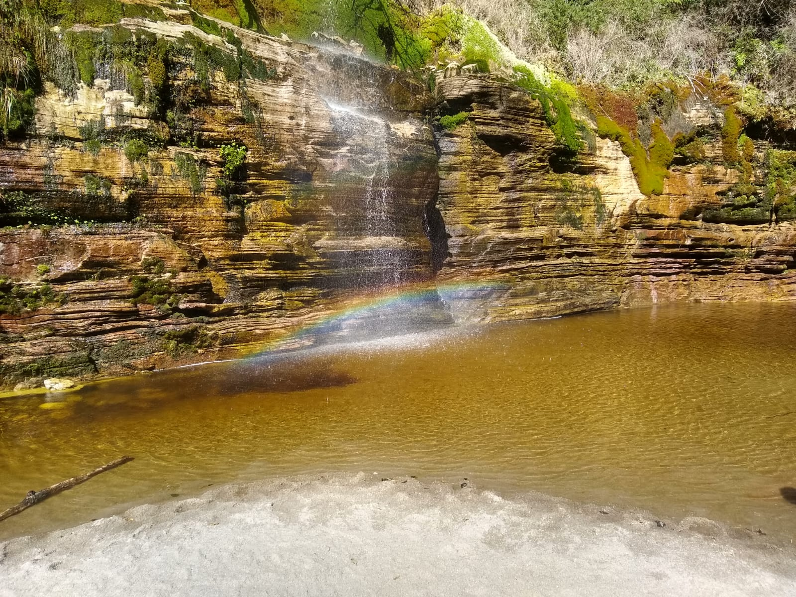

História
Muito antes de se tornar o refúgio dos amantes do ecoturismo, Conceição do Ibitipoca já era terra sagrada. Batizada pelos índios Tupis como a 'serra que estoura' (uma referência aos raios que cortam suas montanhas), a vila nasceu oficialmente no século XVII com a chegada dos bandeirantes em busca de ouro. O vilarejo abrigou inconfidentes, adormeceu no tempo após o fim do ciclo mineral e manteve-se preservado. Hoje, sua rica história se entrelaça com grutas de quartzito, cachoeiras de águas douradas e o charme irresistível de uma autêntica vila mineira.
